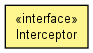

org.hornetq.api.core
Interface Interceptor
public interface Interceptor

This is class is a simple way to intercepting calls on HornetQ client and servers.
To add an interceptor to HornetQ server, you have to modify hornetq-configuration.xml.
To add it to a client, use ClientSessionFactory.addInterceptor(Interceptor)
- Author:
- clebert.suconic@jboss.com, Tim Fox
|
Method Summary |
boolean |
intercept(org.hornetq.core.protocol.core.Packet packet,
RemotingConnection connection)
Intercepts a packet which is received before it is sent to the channel |
intercept
boolean intercept(org.hornetq.core.protocol.core.Packet packet,
RemotingConnection connection)
throws HornetQException
- Intercepts a packet which is received before it is sent to the channel
- Parameters:
packet - the packet being receivedconnection - the connection the packet was received on
- Returns:
true to process the next interceptor and handle the packet,
false to abort processing of the packet
- Throws:
HornetQException
Copyright © 2009 Red Hat Inc. All Rights Reserved.